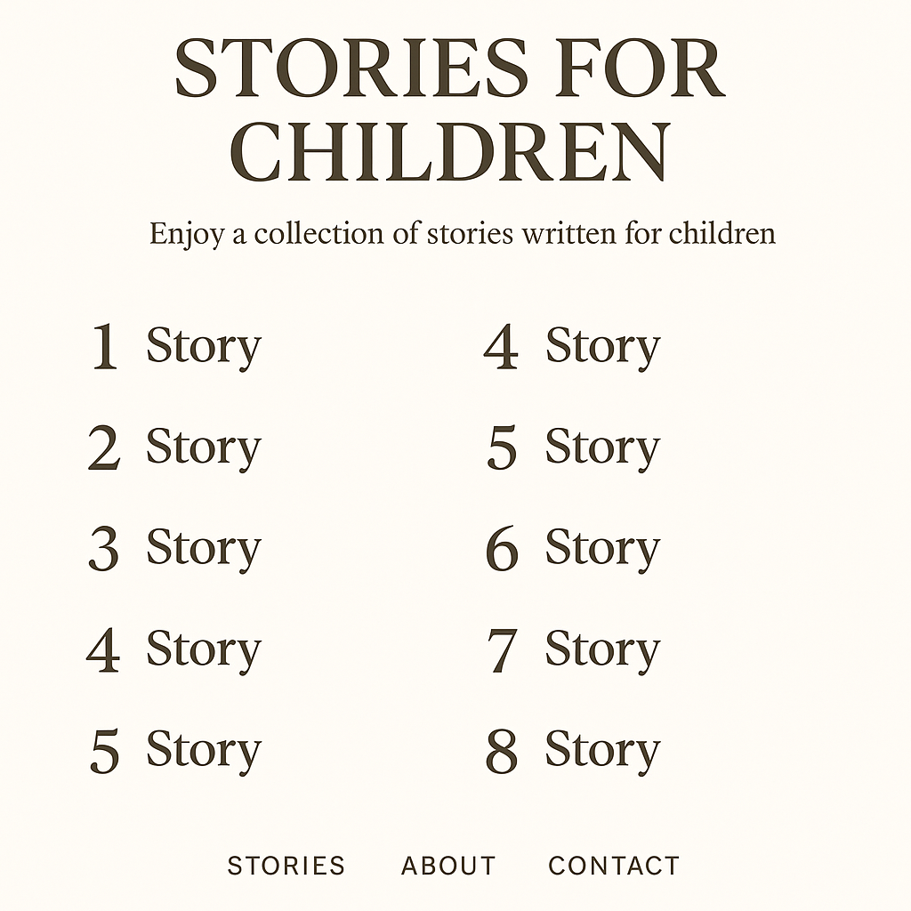

Пролог
Галактика была тише обычного. Не тишина космоса, а тишина перед бурей. «Искра» шла в пустоте, и каждый из био‑вотчкаров чувствовал её на своём корпусе, словно холодный ветер, которого нет.
Материос сидел у иллюминатора. Он был теперь с ними, но всё ещё немного сутулился, словно боялся занять слишком много места.
— Там, впереди, — сказал он тихо. — Врата.
— Ты уверен? — спросил Аквас.
— Я… чувствую их, — ответил Материос. — И они тоже чувствуют нас.
Террос посмотрел на планету, которая медленно возникала из пустоты. Она не имела цвета. Не имела формы. Она просто была.
— Это не планета, — сказал он. — Это шрам.
Приближение
Когда «Искра» вошла в атмосферу, воздух исчез. Всё исчезло. Было ощущение, что вокруг — ничего. Даже свет выглядел ненастоящим.
И тогда они увидели их. Врата. Огромные, высотой с гору, сделанные из чего‑то, что нельзя было назвать ни металлом, ни камнем. Они были раскрыты наполовину, и из щели тянулось нечто. Не тьма. Не свет. Что‑то, что не должно было существовать.
— Это она, — прошептал Материос. — Первичная Пустота.
Враг
Тьма начала стекаться к ним, как живая. Она не имела формы — и тут же принимала любую. Ветер шёл против них, но это был не ветер. Камни рушились, но это были не камни.
— Она копирует всё, — сказал Ветрос, отбиваясь. — Даже нас.
— Она была до нас, — ответил Террос. — Она помнит всё.
— И хочет забрать всё обратно, — добавил Аквас.
Драгос поднял кулак. — Тогда мы покажем, что мы не так просто забираемся.
Попытка
Они интегрировались в Квадротона. Огонь, вода, ветер, земля — всё сошлось в одном теле.
Квадротон ударил, и огонь рассёк тьму. Вода смыла её куски. Ветер разорвал её щупальца. Земля раздавила её корни.
Но тьма не исчезла. Она поглотила удары, как будто училась на них.
— Она не боится нас, — сказал Террос. — Она нас… ждала.
Преображение
Материос шагнул вперёд. Он дрожал, но в глазах был свет.
— Я не могу прятаться, — сказал он. — Я — то, чего вам не хватало.
— Материос, — начал Аквас, — ты ещё слаб…
— Нет, — перебил он. — Я боюсь. Но я всё равно готов.
Он протянул руки, и к нему потянулись остальные: Драгос, Ветрос, Аквас, Террос.
— ИНТЕГРАЦИЯ!
Пентатон
Вспышка была такой, что космос дрогнул. Из света вышел Пентатон — пять стихий в одном теле.
Он был выше, чем Квадротон, и в его движениях не было тяжести. Он был не оружием — он был гармонией.
— Пустота, — сказал Пентатон, и голос его был мягким и твёрдым одновременно, — ты не враг. Ты часть мира. Но ты забыла, что значит быть в нём.
Битва
Тьма бросилась на него. Она пыталась поглотить, сломать, разорвать.
Но Пентатон не бил в ответ. Он очищал. Каждый его удар не разрушал — он наполнял светом. Каждое движение возвращало Пустоте форму, которой у неё не было.
И вдруг тьма перестала сопротивляться. Она сложилась. Сжалась. И превратилась в прозрачный, чистый свет.
Последствие
Врата закрылись. Мир перестал дрожать.
Материос стоял в центре «Искры». Он больше не сутулился.
— Мы смогли.
— Не потому, что были сильнее, — сказал Аквас. — А потому что были вместе.
— Даже с тем, кого боялись, — добавил Ветрос.
Драгос усмехнулся. — И даже со страхом в сердце.
Террос положил руку на плечо Материоса. — Теперь всё цело.
📜 Урок
Иногда нужно не разрушить врага, а понять его. Даже тьма может стать светом, если дать ей место — но не власть.